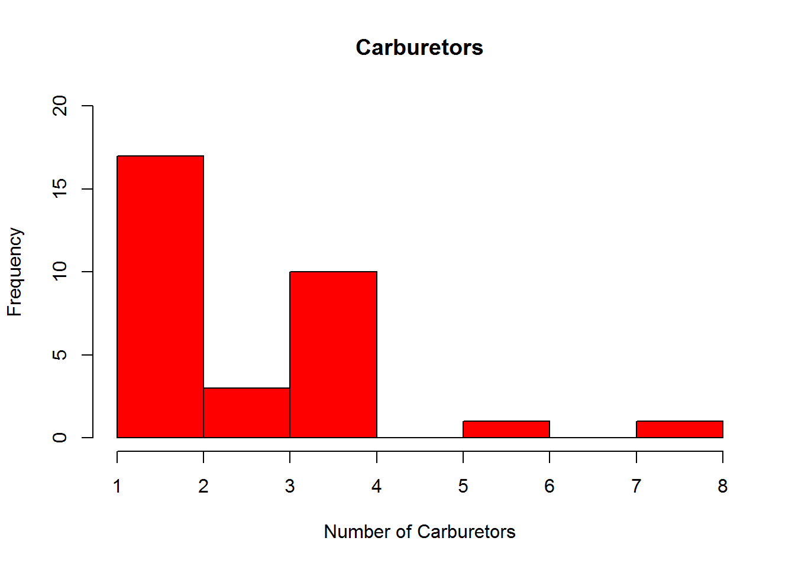

GRÁFICOS DE POLÍGONOS DE FRECUENCIA
Guardar los datos del histograma. Asigna el gráfico del historama a una variable h. Observa la información almacenada en la variable h a través de h\(breaks, h\)counts y h$mids. ¿Qué tipo de información almacenan breaks, counts y mids? Dibuja una línea extra en el histograma de manera que represente el polígono de frecuencias.
h= hist(mtcars$carb, main = "Carburetors", ylim=c(0,20), col="red", xlab="Number of Carburetors")
hist(mtcars$carb, main = "Carburetors", xlim=c(0,8), ylim=c(0,20), col="red", xlab="Number of Carburetors")
lines(c(0,h$mids),c(0,h$counts), type = "b", pch = 20, col = "blue", lwd = 3)POLÍGONO DE FRECUENCIAS ACUMULADA
Dibuja un gráfico que represente el polígono de frecuencias acumulada . Observa la estructura del código.¿Qué hace la función cumsum()?
plot(c(0,h$mids), c(0,cumsum(h$counts)), type = "b", col = "blue", pch = 20)